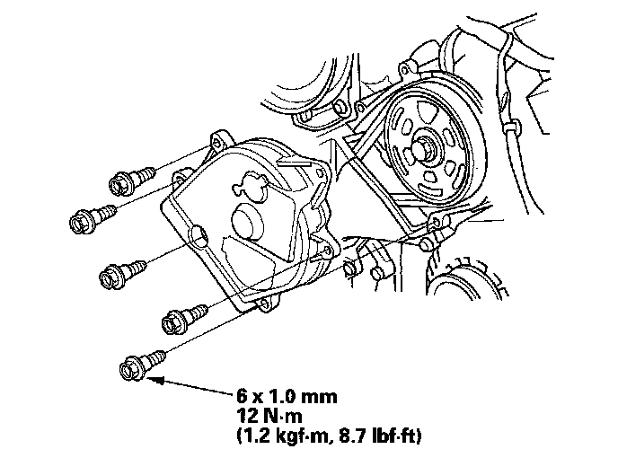
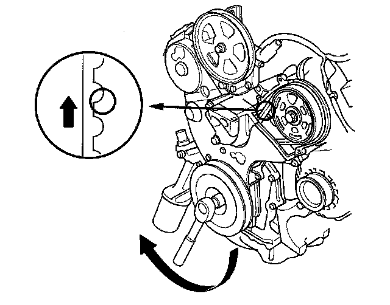

Timing Belt: Testing and Inspection
Timing Belt Inspection1. Remove the drive belt.
2. Remove the drive belt auto-tensioner.
3. Remove the front upper cover.

4. Inspect the timing belt for cracks and oil or coolant contamination. Replace the belt if it is cracked, or is contaminated with oil or coolant. Wipe off any oil or solvent that gets on the belt.
